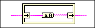

Owning Palette: Structures
Requires: Base Development System
Right-click the border of an In Place Element structure and select the Add In Place In / Out Element option from the shortcut menu to place this border node on the In Place Element structure.

Use this border node to perform operations on any data type and return the resulting data to the same location in memory. Each data element input on the left side of the structure must be wired to the border node on the right side of the structure. This border node allows the LabVIEW compiler to avoid moving the specified data to different memory locations and can increase memory and execution efficiency.
The border node on the left side of the structure accepts any data type as an input. You must wire the same data type from the border node on the left side of the structure to the input on the border node on the right side of the structure.